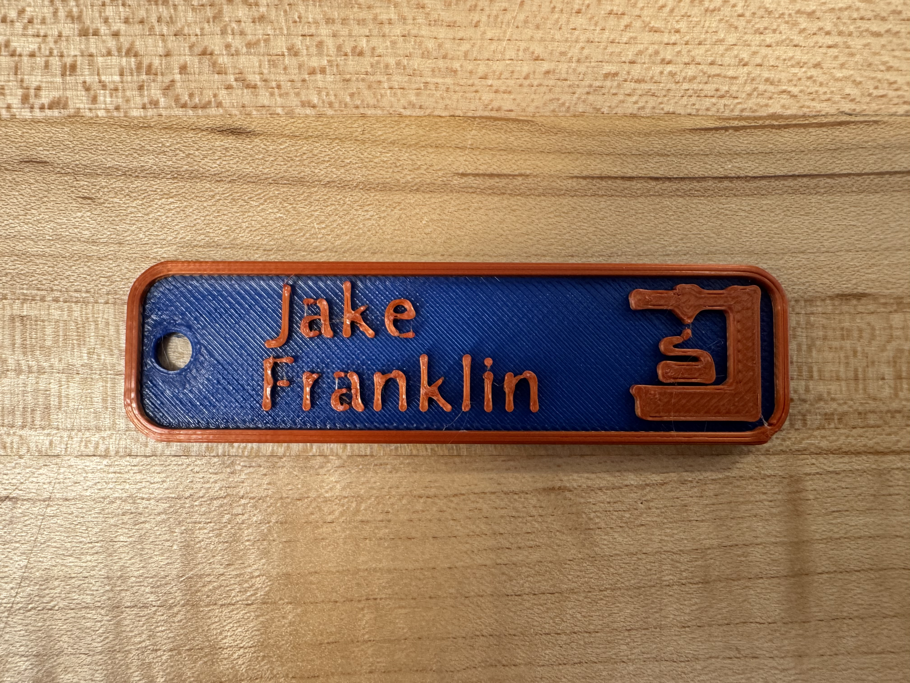
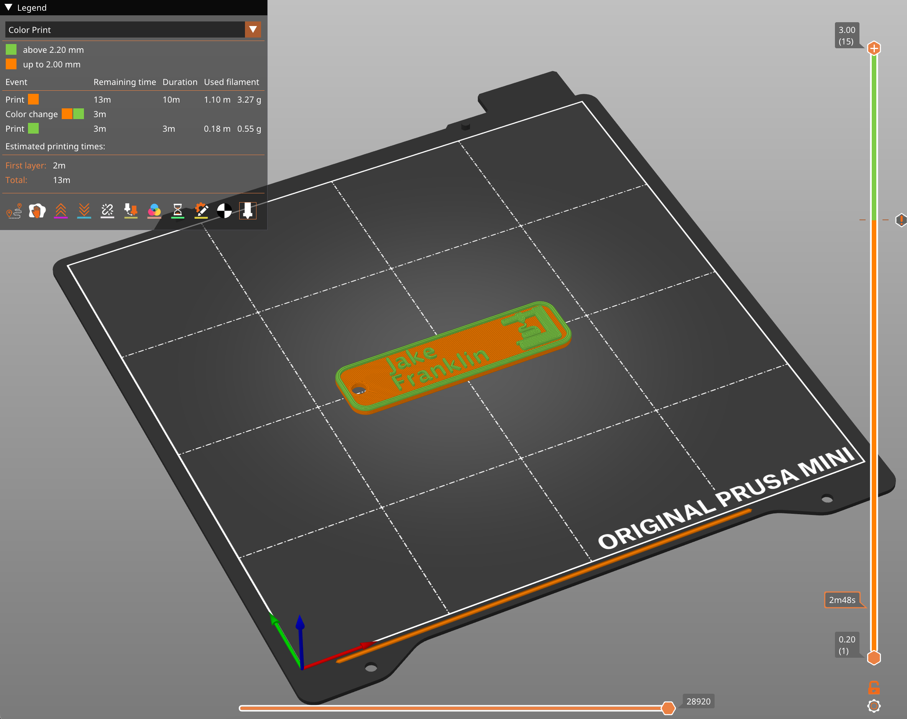
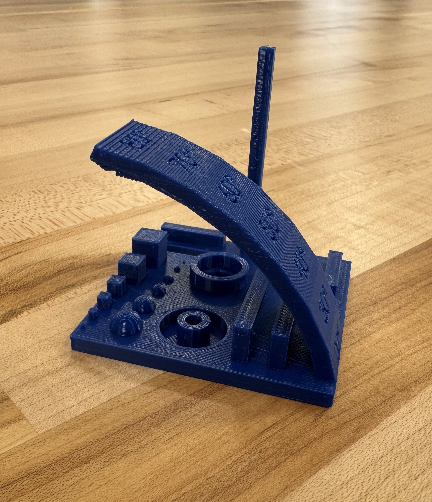

In this project, I modified an existing 3mf file to create a personalized keychain with my name on it as well as printing a torture test to test the limits of the Prusa Mini + 3D printer I used.
  This keychain was my first print for the Engineering class at Brandeis (ENGR 11A). To start this project, I downloaded the 3mf file from the link provided in the project guidelines document. Once I had the file downloaded, I opened it in PrusaSlicer (the CAM software recommended for the Prusa Mini+) and checked if the profile was correct for the settings I wanted. For this print, I used my custom 0.2mm layer height profile designed for speed while still having high print quality. To do this, I modified the existing 0.2 SPEED profile in PrusaSlicer with the following values: Layer Height: 0.2mm Print Speed: 140mm/s External Perimeter Speed: 80mm/s Infill Density: 10% Infill Pattern: Gyroid Bridges: 50mm/s Supports: None The most intricate part of this print was the color change for the letters and icon in the keychain. This color change happened 11 layers into the print (about 10 minutes). The overall print time for this object was 13 minutes which was a perfect time to remind myself of all the intricacies of 3d printing after the month off from break.
 For this project, I used a Prusa Mini+ to print a torture test and a keychain with my name on it. The torture test was printed at 0.2mm layer height with 15% infill and the keychain was printed at 0.1mm layer height with 20% infill. The keychain took about 1 hour to print and the torture test took about 4 hours to print. The keychain came out great, but the torture test failed because the printer ran out of filament. I learned a lot from this project, including how to modify 3mf files and how to use a Prusa Mini+.